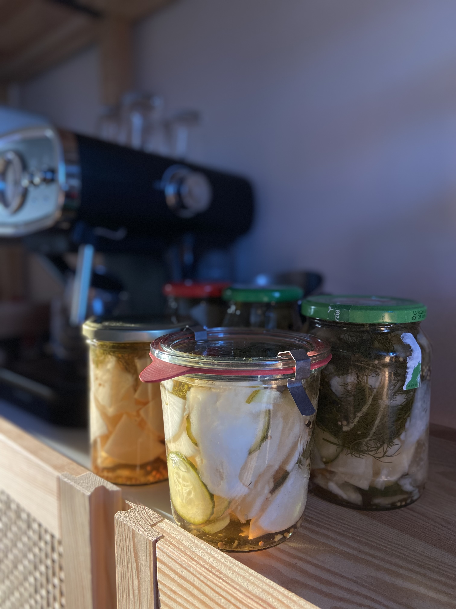

Pickled Radish

Ingredients
- 1kg Radish
- 250g Cucumber
- 750ml Vinegar
- 750ml Water
- 5 Tablespoons Salt
- 10 Tablespoons Sugar
- 3 Teaspoons Mustard Seeds
- 24 Peppercorns (mixed)
- Some Dill (optional)
- Clean Glass Jars
Steps
- Wash and cut the radish and cucumber into whichever form you like.
- Wash and cut the dill.
- Fill your clean glass jars with radish, cucumber and some dill until it is filled to about 3/4.
- Meanwhile, bring all the other ingredients to a boil.
- Once sugar and salt are fully dissolved, fill the glass jars with the (lightly boiling) fluid to the brim.
- Close the lid and carefully turn the jar upside down. If you can see any bubbles entering the jar, you need
to fasten the lid more.
- Be careful while handling the hot jars and use oven and use oven gloves to prevent
burning yourself!
- Let the jars cool down and check, whether a vacuum seal formed.
- If all the jars are properly sealed, store them in a cool and dark place for 14 days.
- After 14 days you can enjoy your pickled radish!
- Your pickles will preserve for about 3 months. We recommend storing opened jars in the fridge, where they will stay
fresh for about 3 weeks.